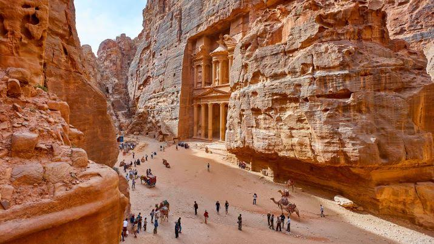

Explore the mysteries of Atlantis, Pompeii, Machu Picchu, Troy and
Cahokia.
Petra
The Rose City of Jordan

Petra, an ancient city in southern Jordan, is famous for its rock-cut
architecture and water conduit system. It was the capital of the
Nabataean Kingdom in the 4th century BC and flourished as a major trade
hub. Today, Petra is one of the New Seven Wonders of the World and a
UNESCO World Heritage Site.
Historical Background: Petra is an ancient city in Jordan, famous for
its rock-cut architecture and water conduit system. It was the capital
of the Nabataean Kingdom in the 4th century BC.
Rediscovery: Petra was largely forgotten by the Western world until it
was rediscovered by Swiss explorer Johann Ludwig Burckhardt in 1812.
Significance: Known as the "Rose City" due to its pink sandstone cliffs,
Petra is a UNESCO World Heritage Site and one of the New Seven Wonders
of the World.